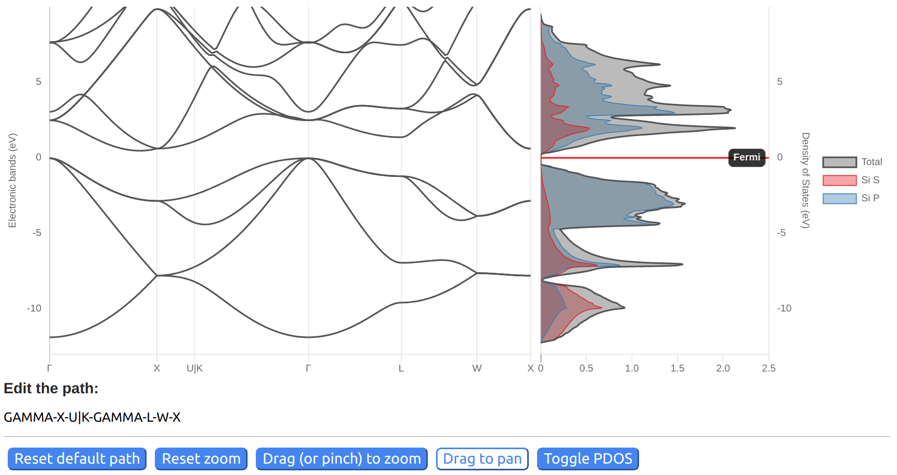
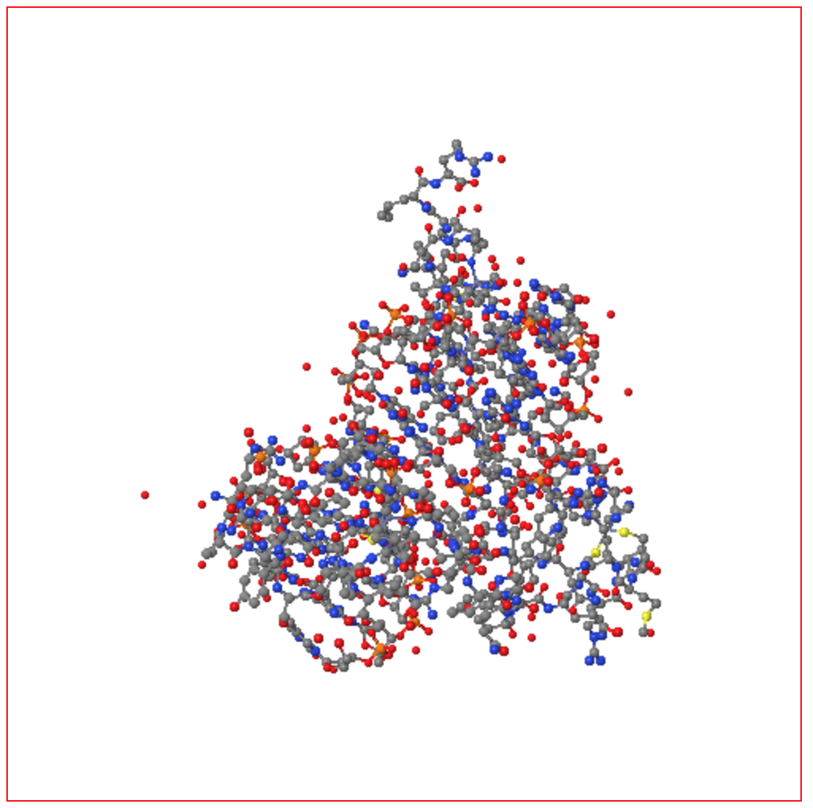

Jupyter Widgets
Jupyter Widgets¶
We developed Jupyter widgets related to computational chemistry and physics.
Widget Periodic Table
A Jupyter widget for an interactive periodic table.

Widget DOS and Bandstructure Plot
A Jupyter widget to plot bandstructures and density of states.

Widget Brillouin Zone Visualizer
A Jupyter widget to plot the 1st Brillouin zone and path for the band structure.

Widget JSmol
A Jupyter widget to use Jmol/Jsmol.

Widget Code Input
A widget to allow input of a python function, with syntax highlighting.

Molecular rendering with POVRAY
A collection of tools to render molecular structures into high quality images or videos using the POVRAY engine.